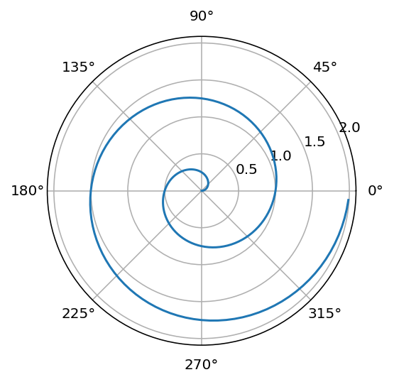

from ipyleaflet import Map, Marker, basemaps, basemap_to_tiles
m = Map(
basemap=basemap_to_tiles(
basemaps.NASAGIBS.ModisTerraTrueColorCR, "2017-04-08"
),
center=(52.204793, 360.121558),
zoom=4
)
m.add_layer(Marker(location=(52.204793, 360.121558)))
mPlacing Colorbars
Colorbars indicate the quantitative extent of image data. Placing in a figure is non-trivial because room needs to be made for them. The simplest case is just attaching a colorbar to each axes:1.
1 See the Matplotlib Gallery to explore colorbars further
Code
import matplotlib.pyplot as plt
import numpy as np
fig, axs = plt.subplots(2, 2)
fig.set_size_inches(20, 8)
cmaps = ['RdBu_r', 'viridis']
for col in range(2):
for row in range(2):
ax = axs[row, col]
pcm = ax.pcolormesh(
np.random.random((20, 20)) * (col + 1),
cmap=cmaps[col]
)
fig.colorbar(pcm, ax=ax)
plt.show()Interactivity with maps
Quarto allows interactivity with maps:
Content in the margins
Quarto allows to put content to the margins:
import numpy as np
import matplotlib.pyplot as plt
r = np.arange(0, 2, 0.01)
theta = 2 * np.pi * r
fig, ax = plt.subplots(
subplot_kw = {'projection': 'polar'}
)
ax.plot(theta, r)
ax.set_rticks([0.5, 1, 1.5, 2])
ax.grid(True)
plt.show()
Interactive data exploring
ObservableJS renders interactive data plots:
Code
viewof bill_length_min = Inputs.range(
[32, 50],
{value: 35, step: 1, label: "Bill length (min):"}
)
viewof islands = Inputs.checkbox(
["Torgersen", "Biscoe", "Dream"],
{ value: ["Torgersen", "Biscoe"],
label: "Islands:"
}
)Code
Plot.rectY(filtered,
Plot.binX(
{y: "count"},
{x: "body_mass", fill: "species", thresholds: 20}
))
.plot({
facet: {
data: filtered,
x: "sex",
y: "species",
marginRight: 80
},
marks: [
Plot.frame(),
]
}
)Code
data = FileAttachment("palmer-penguins.csv").csv({ typed: true })
filtered = data.filter(function(penguin) {
return bill_length_min < penguin.bill_length &&
islands.includes(penguin.island);
})
Inputs.table(filtered)